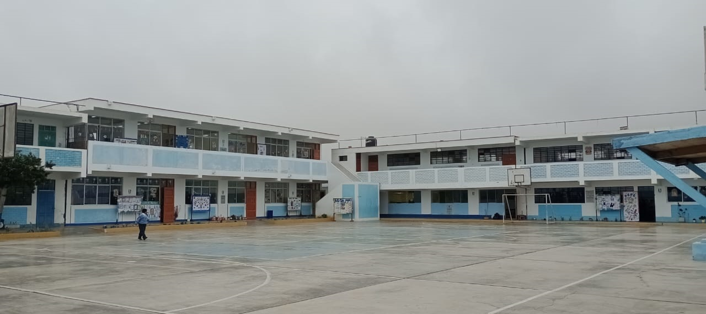

"PRESENTACION"
Ha pasado ya, rapidamente por cierto , cerca de año y medio que estuvimos enclaustrados en nuestros hogares para evitar contagiarnos del virus del COVID19. Ha pasado ya, un año, en que se reiniciaron las clases presenciales y donde los y las estudiantes regresaron a las aulas, llenos de temores y problemas socioemocionales por las diversas situaciones familiares que tuvieron que vivir y observar en la època de la pandemia. El años 2022, tuvimos que convivir con cierto temor, en nuestra IE con la finalidad de que nuestros estudiantes no sigan perdiendo clases que luego perjudicarian su educacion, y los docentes, afrontamos el reto de realizar una educacion formativa y que los estudiantes movilicen sus competencias para el logro de sus aprendizajes.
Este año 2023, nuevamente afrontamos el reto, mediante el cual los y las estudiante, van a llegar a nuestra IE Con las ganas de tener un aprendizaje significativo, sobre todo que sea una educacion integral. Para eso es necesario realizara cambios profundos en la practica de la enseñanza, hoy el pais y el mundo requieren que la profesion docente se resitùe en los cambios que viene sucediendo, el uso de las TICS por ejemplo. ¡No tengamos miedo al cambio! que sea una fortaleza no una debilidad .
Tambien es importante que una de las caracteristicas del servicio educativo 2023 es que todas las acciones realizadas tengan como proposito el bienestar socioemocional del estudiante (equilibrio emocional) adaptcion ala convivencia, capacidad de afrontar retos para contribuir al bienestar colectivo) y su formacion integral. Es por eso que este 2023 les damos la BIENVENIDA a todos nuestros estudiantes y alos padres de familia para un trabajo en conjunto en bienestar de nuestros hijos.
La comision.

pabellon primaria